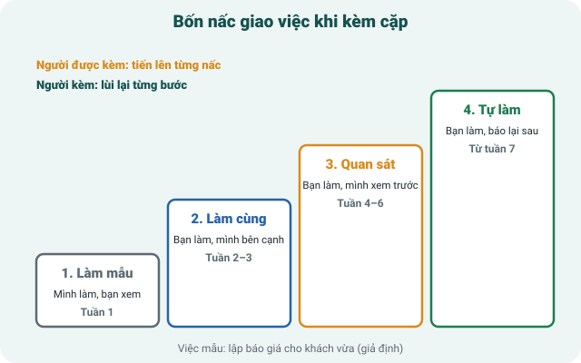

K9 · Lãnh đạo và phát triển người khác › Bậc 4 Thành thạo
Kèm cặp một đồng nghiệp trong ba tháng
Bài này làm Tờ 5: Kế hoạch kèm cặp. Mẫu in. Người được kèm có thể học song song Kế hoạch 90 ngày và Xin và dùng phản hồi.
1. Mục tiêu
- Lập kế hoạch kèm cặp 3 tháng: 2–3 mục tiêu đo được và lịch gặp 1-1.
- Chọn đúng nấc giao việc cho từng việc: làm mẫu, làm cùng, quan sát, tự làm.
2. Khởi động truy xuất
- Bốn bước gỡ bất đồng là gì?
- Vì sao phải nhắc lại ý người phản biện trước khi trả lời?
Đáp án
- Sự kiện; diễn giải; tiêu chí chung; thử nghiệm hoặc chuyển lên.
- Để chứng tỏ bạn đã hiểu. Người được hiểu bớt căng và chịu nghe lại.
Xem lại: Gỡ bất đồng chuyên môn.
3. Giải thích
Kèm cặp (mentoring) là giúp một người tiến bộ trong nhiều tuần. Bạn không làm thay họ. Bạn giúp họ tự làm được.
Bước 1. Đặt mục tiêu chung. Ngồi với người được kèm. Chọn 2–3 việc họ muốn làm được sau 3 tháng. Mỗi mục tiêu phải đo được. Ví dụ: "tự lập báo giá cho khách vừa, sai sót dưới 1 lỗi mỗi bản".
Bước 2. Giao việc theo 4 nấc. Mỗi việc đi qua các nấc, nhanh hay chậm tùy người.
- Làm mẫu: bạn làm, họ xem. Bạn nói to lý do của từng bước.
- Làm cùng: họ làm, bạn ngồi cạnh, gợi ý khi cần.
- Quan sát: họ tự làm, bạn xem kết quả trước khi gửi đi.
- Tự làm: họ làm và báo lại. Bạn chỉ kiểm khi được hỏi.

Bước 3. Gặp 1-1 đều đặn. 30 phút mỗi tuần hoặc hai tuần. Người được kèm chuẩn bị trước: đã làm gì, vướng gì, muốn hỏi gì.
Hỏi trước khi chỉ. Khi họ hỏi, đừng trả lời ngay. Hỏi lại: "Em định làm thế nào?" Nếu hướng đúng, để họ làm. Họ sẽ nhớ lâu hơn khi tự nghĩ ra.
Phản hồi theo hành vi. Nói điều bạn thấy, tác động của nó, và gợi ý lần sau. Tránh nhận xét về tính cách, như "em ẩu quá".
Tờ 5. Kế hoạch kèm cặp
- 2–3 mục tiêu đo đượcNgười được kèm cùng chọn.
- Việc và nấc hiện tạiLàm mẫu, làm cùng, quan sát, tự làm.
- Lịch 1-1Ngày, giờ, ai chuẩn bị gì.
- Ghi chú tiến bộBằng chứng, không phải cảm giác.
Kèm cặp tốt cũng giúp chính bạn. Giải thích cho người khác buộc bạn hiểu sâu hơn việc mình làm.
4. Ví dụ tại nơi làm việc Việt Nam
Tình huống giả định. Chị Lan là kế toán tổng hợp cấp cao ở một công ty xây dựng tại Cần Thơ. Chị được giao kèm Vy, kế toán mới vào 2 tháng.
Hai người ngồi 30 phút. Vy muốn tự làm được hai việc sau 3 tháng. Một: đối chiếu công nợ nhà cung cấp hằng tháng, không sót hóa đơn. Hai: lập bảng tạm tính thuế quý để chị Lan duyệt.
Chị Lan xếp nấc. Đối chiếu công nợ: Vy đã làm cùng một lần, nên lên nấc quan sát. Thuế quý: Vy chưa từng làm, bắt đầu từ làm mẫu.
Khi Vy hỏi cách xử lý một hóa đơn lệch số tiền, chị Lan hỏi lại: "Em nghĩ nên làm gì?" Vy đề xuất gọi nhà cung cấp xác nhận. Chị đồng ý và để Vy gọi.
Lần đối chiếu thứ hai, Vy sót 3 hóa đơn. Chị Lan phản hồi: "Bảng tháng này thiếu 3 hóa đơn nhận qua email. Nếu sót, công nợ báo cáo sẽ sai. Lần sau em lọc thêm hộp thư trước khi chốt nhé."
Tháng thứ ba, Vy tự làm đối chiếu công nợ, không sót hóa đơn.
Vì sao cách này tốt: mục tiêu do Vy cùng chọn và đo được. Mỗi việc ở đúng nấc. Phản hồi nói về việc, có tác động và gợi ý.
5. Thực hành
Tình huống giả định. Bạn là bếp phó ở một nhà hàng tại Huế. Bạn được giao kèm Quân, phụ bếp mới. Quân đã biết sơ chế. Quân chưa biết nấu nước dùng chính và chưa từng tự kiểm hàng nhập buổi sáng.
Viết 2 mục tiêu đo được cho 3 tháng. Chọn nấc bắt đầu cho từng việc. Viết một câu phản hồi theo hành vi cho tình huống: Quân để thịt nhập về ngoài tủ lạnh 40 phút.
Gợi ý 1
Mục tiêu đo được cần có tiêu chuẩn. Ví dụ: nước dùng đạt vị theo đánh giá của bếp trưởng mấy lần liên tiếp?
Gợi ý 2
Câu phản hồi có ba phần: điều thấy, tác động, gợi ý lần sau.
Lời giải mẫu
- Mục tiêu 1: tự nấu nước dùng chính, đạt chuẩn vị bếp trưởng 5 lần liên tiếp. Nấc bắt đầu: làm mẫu.
- Mục tiêu 2: tự kiểm hàng nhập theo bảng kiểm, ghi đủ nhiệt độ và hạn dùng trong 2 tuần liền. Nấc bắt đầu: làm cùng, vì Quân đã biết sơ chế.
- Lịch 1-1: 20 phút sau ca trưa thứ Hai hằng tuần.
- Phản hồi: "Sáng nay thịt nhập về nằm ngoài tủ 40 phút. Thịt để lâu ở nhiệt độ phòng dễ hỏng, khách có thể bị ngộ độc. Lần sau em cất vào tủ trước, rồi mới kiểm giấy tờ nhé."
(Số liệu là giả định.)
6. Tự kiểm tra
Chọn đáp án. Mỗi lựa chọn đều có giải thích.
Câu 1. Mục tiêu kèm cặp nào đo được?
-
Chưa đúng. Tự tin là cảm giác. Hai người có thể đánh giá rất khác nhau.
-
Đúng. Đúng. Có việc cụ thể, số lần, điều kiện và thời gian, nên kiểm được.
-
Chưa đúng. Hiểu rõ đến đâu thì khó kiểm. Cần nêu việc làm được.
Câu 2. Người được kèm đã làm một việc đúng 3 lần khi bạn ngồi cạnh. Nấc tiếp theo là gì?
-
Chưa đúng. Họ đã làm được khi có bạn bên cạnh. Lùi về làm mẫu làm chậm tiến bộ.
-
Đúng. Đúng. Bạn lùi một bước, vẫn chặn được sai sót trước khi đến khách.
-
Chưa đúng. Nhảy cóc qua nấc quan sát dễ để lỗi lọt ra ngoài.
Câu 3. Người được kèm hỏi: "Khách đòi giảm giá thêm 5%, em trả lời sao?" Bạn nên nói gì trước?
-
Đúng. Đúng. Hỏi trước giúp họ tự nghĩ. Nếu hướng sai, bạn vẫn kịp chỉnh.
-
Chưa đúng. Trả lời ngay giải quyết việc hôm nay, nhưng họ không học được cách nghĩ.
-
Chưa đúng. Làm thay khiến họ không tiến bộ, và bạn bị ôm thêm việc.
Câu 4. Câu phản hồi nào theo hành vi?
-
Chưa đúng. Đây là nhận xét tính cách. Người nghe dễ phòng thủ và không biết sửa gì.
-
Đúng. Đúng. Có điều thấy được, tác động và gợi ý cụ thể cho lần sau.
-
Chưa đúng. Câu này không nói rõ cần đổi điều gì.
7. Phản tư
- Khi đồng nghiệp hỏi, bạn thường trả lời ngay hay hỏi lại họ định làm gì?
- Một việc bạn đang "làm thay" cho người khác là gì? Việc đó đang ở nấc nào?
8. Áp dụng thật
Trong 7 ngày tới, chọn một người bạn có thể kèm, chính thức hoặc không chính thức. Làm Tờ 5 cùng họ. Hẹn buổi 1-1 đầu tiên.
9. Siêu dữ liệu
| skill | K9 · Lãnh đạo và phát triển người khác |
|---|---|
| level | Bậc 4 · Thành thạo |
| group | N4 |
| framework_map | WEF: Talent management; Leadership and social influence; SkillsFuture CCS: Developing People; NACE: Leadership; CSfW: 2b Connect and work with others; LifeComp: S3 Collaboration (chỉ dẫn chiếu) |
| updated | 2026-11-14 |
Hoàn thành bài
Đánh dấu đã học để site gợi ý lịch ôn sau 1, 3 và 7 ngày. Dữ liệu chỉ lưu trên máy của bạn.
Lịch ôn gợi ý: